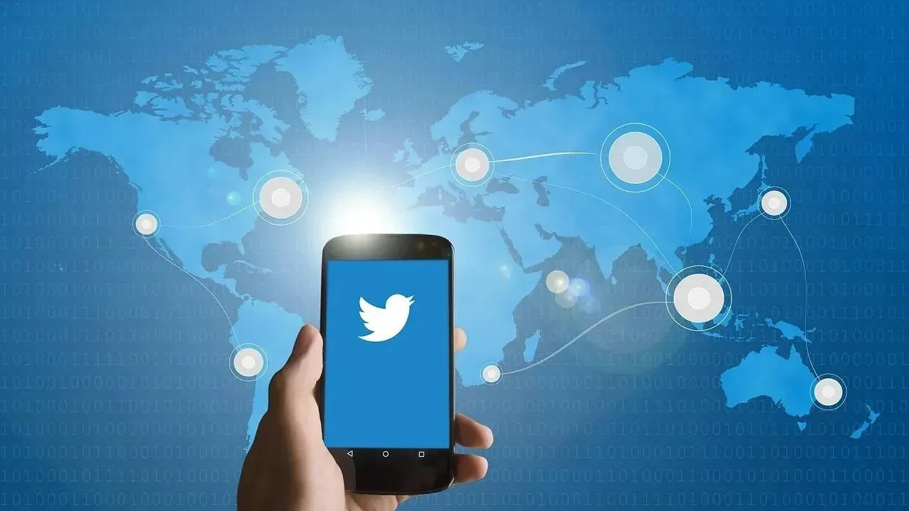

Elon Musk wants to encrypt Twitter DMs; platform could add audio and video chat as well
Highlights
- Microblogging platform Twitter could add encrypted messages soon.
- Musk also wants the app to have audio/video chat.
- Here is everything we know about the meeting.

Elon Musk, the new boss of Twitter, has been talking about bringing several changes to the platform. Recently, the platform rolled out its new subscription service for $7.99 a month but had to recall it due to a surge of fake accounts.
Now, the Twitter Blue subscription is said to come out later this month.
Twitter could soon have encrypted DMs
Elon Musk, the new boss of Twitter, has been talking about bringing several changes to the platform. Recently, the platform rolled out its new subscription service for $7.99 a month but had to recall it due to a surge of fake accounts. Now, the Twitter Blue subscription is said to come out later this month. Advertisements Twitter could soon have encrypted DMs In addition, Musk has also been vocal about how he wants to improve Twitter's direct messages. According to a report by The Verge, Musk has talked about encrypting the direct messages sent via the platform.
The report says, "Musk told employees that the company would encrypt DMs." The tech mogul wants users to communicate using the platform's DM service without being concerned about their privacy or a data breach that could leak their messages to other users, on the internet. In the meeting, Musk also talked about DMs being leaked before, as back in 2018, Twitter reported that outsiders had accessed an unknown number of messages between businesses and their customers without consent. Musk told employees, "it should be the case that I can't look at anyone's DMs if somebody has put a gun to my head." In addition, it is working to add encrypted voice and video calling for users. Twitter's current CEO also told employees that he had spoken with Signal's creator and that the platform could help Twitter build encrypted DMs. From what it looks like, Musk wants Twitter to evolve from a microblogging platform to a communications platform that people use daily to connect with others. For more technology news, product reviews, sci-tech features and updates, keep reading Digit.in or head to our Google News page.